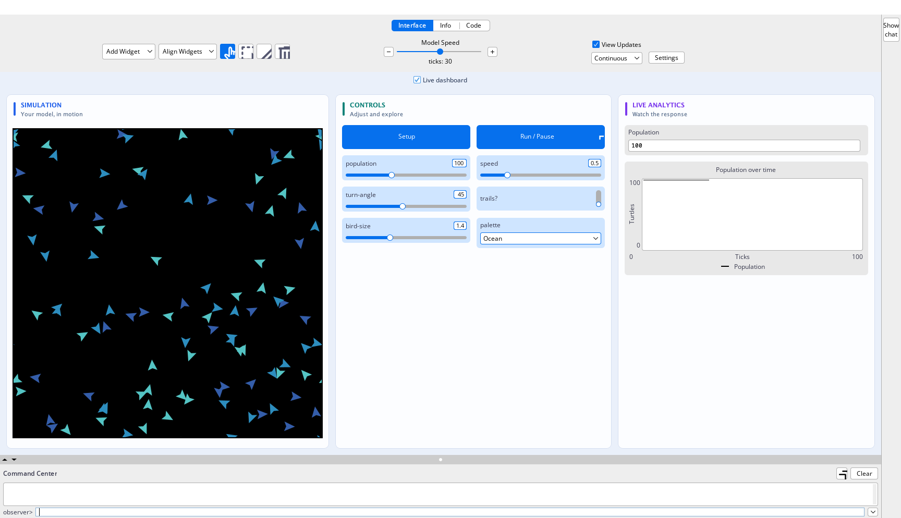

User manual · Version 1.0.4
Build a model. Understand its behavior.
By texting in this style, all the stuff become available: “I want to model disease spread with vaccination and see what happens when I change the transmission rate.” MemoSim brings a live simulation, its controls, its measurements and an optional modeling assistant into one desktop workspace. Powered by NetLogo, it supports agent-based models and stock-and-flow models — but its real power is conversation: tell MemoSim what you want and it builds it for you.
Use this manual while working, or read the guided beginner tutorial for a complete exercise. The dictionary is the companion for language lookups. The PDF edition provides a printable reading copy; expandable notes and other browser interactions belong to this HTML edition.
Offline use: keep this folder together, including its assets, stylesheet and script. The desktop simulation engine runs locally. Cloud assistant requests and online reference searches need a connection; a separately configured local language-model service has its own availability requirements.
1. Start with a question
By texting in this style, all the stuff become available: “I want to model disease spread with vaccination and see what happens when I change the transmission rate.” Tell MemoSim your question in plain language, name the agents, rules and measure you care about, and the assistant drafts a working model you can run and adjust.
A model is an explicit set of assumptions, not a miniature copy of reality. Begin with a question narrow enough to test: for example, how does movement affect encounters, or how does a withdrawal rate change a reservoir? Identify what changes, what stays fixed, the time unit, and the measurements that would answer the question.
Chat-first workflow: Open MemoSim Desktop, open the assistant panel, and type your question. Then:
- Text the setup: “Create a model with 100 turtles, 99 susceptible and one infected, with transmission-rate and recovery-rate sliders, Setup and Go buttons, and a three-count plot.” The assistant writes the code and widgets for you.
- Inspect the result: Look at the Interface, Info and Code tabs the assistant produced. Read the Info tab to confirm the purpose matches your question.
- Run and test: Text “Run setup and twenty steps; report the three counts.” Verify the model behaves as expected before changing anything.
- Change one thing at a time: Text “Add a vaccination-rate slider” or “lower transmission-rate to 0.1” rather than editing code by hand.
The tutorial's first-model exercise develops this sequence into a hands-on investigation. For a first session, a small model with a clear stopping condition is more useful than a complex model with many controls.
What should I record before the first run?
Write down the model filename, MemoSim version, parameter values, intended run length, random seed if one is fixed, and your prediction. Recording a prediction helps separate what you expected from what the model actually produced.
2. Find your way around
By texting in this style, all the stuff become available: “Show me what widgets this model has, what each slider controls, and what the code does.” The assistant inspects the live workspace and answers in plain language — no need to click through tabs hunting for variables.
The desktop owns the open model and runs its NetLogo code. The Interface tab provides the world view and model widgets; Code contains procedures; Info contains the model's explanation. The assistant is an additional panel connected to this workspace. Its engine status and its language-model status describe different connections.
Chat-first navigation: Instead of manually opening each tab, text “List all sliders and their current values” or “What does the go procedure do?” The assistant reads the model structure and reports back.
The live dashboard
With Live dashboard selected, the two-dimensional Interface groups the existing widgets into Simulation, Controls and Live Analytics. Buttons and inputs remain usable while monitors and plots show results. These are the model's actual widgets, not images or duplicated measurements. You do not have to switch between a controls page and an analytics page.
By texting: “Make this dashboard wider, put the sliders on top, and add a monitor for infected-count” — the assistant arranges widgets for you. Or collapse chat (“Hide chat”) for more screen space; it preserves your conversation and does not stop the simulation.

Collapse the assistant
Use Hide chat in the native MemoSim Assistant header. The remaining rail provides Show chat; the corresponding Tools menu action also changes visibility. Collapsing keeps the embedded assistant attached and preserves its conversation. It is a space control, not a stop button: hiding chat does not cancel an assistant operation or stop a simulation. The collapsed preference is remembered.

Clear Live dashboard to return to the original model canvas. Interface editing also restores the original widget arrangement. The dashboard is a presentation of that arrangement, not a replacement for its saved coordinates. Three-dimensional interfaces retain their original layout.
3. Run and compare
By texting in this style, all the stuff become available: “Run setup, set transmission-rate to 0.2, run twenty steps, and report the final counts.” MemoSim's assistant runs the right sequence and interprets the results for you.
Initialization and execution have separate jobs. A typical setup procedure clears old state, assigns starting values, creates agents and resets ticks. A typical go procedure advances the model. These names are conventions: inspect the actual button commands and code when a model uses another design.
Chat-first run: Instead of hunting for a setup button or typing repeat 20 [ go ] in a Command Center, text “Run setup and go twenty steps.” The assistant calls the right commands and reports measurements.
A normal button runs its commands once. A forever button repeats them until stopped or until its code stops execution. Clicking a running forever button stops that button. A model can also provide dedicated step and stop controls. The assistant keeps these widget behaviors straight, so you can ask “Does the forever button stop at the slider limit?” and get a real answer.
The speed control changes execution and display pacing. It does not change a model's scientific time unit or a System Dynamics timestep. The assistant can answer “Does changing the speed control change the timestep?” with a direct no.
Parameters can be read during initialization, during every step, or only under a condition. A slider change may therefore take effect immediately or only after setup. The assistant knows when a slider takes effect only after setup, so you can text “Set recovery-rate to 0.5 and run the same twenty steps” instead of troubleshooting manually.
Why did setup erase my results?
Many models use clear-all, which clears the world and plots. This is normal initialization behavior. Export or record results before another setup, and keep the saved model separately from the output of a particular run.
4. Edit the original interface
By texting in this style, all the stuff become available: “Add a switch called social-distancing that reduces contact radius when on, and wire it into the go procedure.” The assistant creates the widget and updates the code that reads it.
Use the Interface editing tools when adding, arranging or changing widgets. Disable Live dashboard if you want to work directly on the original canvas. Editing a dashboard widget switches to that original editing arrangement. Return to interaction mode to operate the model normally.
The interface supports buttons, sliders, switches, choosers, input boxes, monitors, plots, notes and an output area. The context menu offers widget creation. Set each widget's contents deliberately: a monitor needs a reporter; a button needs commands; a slider needs a variable name, bounds, increment and value. A note explains the interface but does not execute code.
Inputs such as sliders define interface variables. Avoid declaring the same variable again in globals. When renaming an input, update every procedure and widget expression that refers to it, then compile and initialize. Save before major interface changes so that you have a clear recovery point.
Design for the person running the model. Put units in labels or nearby notes, choose defensible input ranges, and explain whether changes require setup. Keep initial conditions separate from policy controls in your naming. The dashboard automatically groups widgets by type, so a clear widget name remains useful even when its screen position changes.
5. Read and write NetLogo code
By texting in this style, all the stuff become available: “Rewrite the go procedure so infected agents recover with probability recovery-rate instead of recovery-rate.” Tell MemoSim the change in plain language and it edits the code, checks it compiles, and reports what changed.
NetLogo distinguishes commands, which do something, from reporters, which return a value. Procedures beginning with to contain commands; procedures beginning with to-report return a result with report. Square brackets delimit instruction blocks and lists. A semicolon starts a comment extending to the end of its line.
Chat-first code editing: Instead of reading the Code tab to find the right procedure and manually changing brackets and names, text the change you want: “Add a monitor for count turtles after setup” or “Change the turtle move distance from 3 to 5.” The assistant proposes the edit, checks compilation, and you apply it if it compiles cleanly.
Agent context matters: The observer can create turtles; ask turtles [ ... ] runs instructions in each turtle's context. Patches are world locations, turtles are mobile agents, and links connect turtles. A command that is valid for a turtle may be invalid for the observer. The assistant keeps agent context in mind when suggesting changes.
Chat-first acceptance: A useful request states the objective, variables, expected controls and acceptance check. For example: “Keep the current movement rule. Add a monitor for count turtles, run setup and twenty steps, and report whether population stays constant.” Follow the tool results, not just the assistant's final prose. Compilation establishes language validity; it does not establish scientific validity.
A complete small model
In a new, separate model, describe the model you want in the chat. Ask MemoSim: “Create a model with 20 turtles that move randomly, leave a trail, and plot their mean distance from center each tick.” The assistant will propose code and widgets; review the proposed code and compiler feedback, then apply the change if it compiles cleanly.
The movement guard makes the example safe at a non-wrapping boundary. The assistant also suggests random-seed to fix the initial random sequence for this example — it is placed after clear-all and before random initialization. The population reporter returns a number and can be used by a monitor, and the assistant can suggest it by name in context.
Inspect before changing
The Command Center can run short commands and evaluate values. In the observer context, show count turtles prints the current count. Use let for a local name and set to change an existing variable. Model-wide declarations belong before procedures. After editing, compile before running; address the first meaningful error before making unrelated changes.
Some reporters require parentheses to make their inputs clear. For example, mean [xcor] of turtles needs at least one turtle to produce a meaningful mean. Tests should include empty agent sets, boundary conditions and zero denominators. See the code lesson and language dictionary for further practice.
6. Read monitors and plots
By texting in this style, all the stuff become available: “Add a monitor for the current infected count and a time-series plot of S, I and R over ticks.” The assistant creates the widgets, wires them to the right reporters, and you just run.
A monitor evaluates its reporter against the current model state. It is useful for a count, mean, total or other compact measurement. Decimal places affect presentation, not the underlying precision. A missing or invalid measurement usually means its expression cannot be evaluated in the current state, rather than that the dashboard lost a separate data stream.
Chat-first analytics: Instead of manually creating a monitor and figuring out the reporter syntax, text “Show me a monitor for recovered-count with label ‘Recovered’.” The assistant proposes the widget; you apply it if the reporter exists in the code.
A plot contains pens and plotting instructions. A common time-series pen uses ticks horizontally and a quantity vertically. However, a model may plot a distribution or an explicitly chosen x-coordinate. Always inspect axis labels and pen update commands before interpreting a curve. A flat line can be a valid constant value, a scale problem, or a pen that is not being updated.
For the movement example above, text “Add a plot called ‘Position over time’ with x-axis Ticks and y-axis Position, and plot the walk-distance each tick.” The assistant creates the plot and wires the pen. You still run setup and go to see the curve.
Native plot editing and export actions remain available through their existing controls and context menus. Use them to inspect pen settings or retain output. This release does not introduce a universal interactive chart editor, linked brushing, crosshairs, synchronized zoom or automatic statistical confidence bands. The modeler has its own small stock-history display, described below; it is not a replacement for saved experiment data.
7. Configure and work with the assistant
By texting in this style, all the stuff become available: “Build me a model of this, run it, and tell me what the curves show.” The assistant is the modeling interface: it writes code, wires widgets, runs commands, and reports results — you stay in conversation.
The assistant can inspect model information, propose and apply code or widget changes, run commands and report results through tools. Tool activity is visible in the conversation. A request to build or repair a model can change the live document; do not assume that every suggestion is held for a separate approval click. Save a working copy before a substantial request.
Connect a provider
- Open Settings, the LLM status pill, or Provider & model in More actions.
- Create a named API connection, using a preset if appropriate.
- Select the API type: OpenAI-compatible Chat Completions or Anthropic Messages.
- Enter the provider's API base URL and your own credential where required. A chat website address is not an API base URL.
- Fetch the model list where supported, or enter an exact model identifier provided by your service.
- Test the connection, save it and select the intended active connection.
Tool-calling support is essential for model editing. A reachable service that only returns conversational text may still be unsuitable. Temperature, output-token limit and thinking options depend on the selected service and model; start with compatible defaults. A successful connection test does not prove that every extension or every modeling request will work.
Enter credentials only in settings, never into model code, chat prompts, screenshots or shared documents. The settings interface retains saved credentials without displaying them again. Local model execution and local project storage do not mean cloud prompts remain on the computer: the selected provider receives request context needed for the assistant's work. Review what you include before using confidential models or datasets.
Ask for a testable change
A useful request states the objective, variables, expected controls and acceptance check. For example: “Keep the current movement rule. Add a monitor for count turtles, run setup and twenty steps, and report whether population stays constant.” Follow the tool results, not just the assistant's final prose. Compilation establishes language validity; it does not establish scientific validity.
The LLM is offline, but the model runs. Is that an error?
No. The native engine and the assistant provider are separate. Continue using local code, widgets and simulations. Cloud requests need internet access; a local provider needs its configured service running and reachable. Online reference search is another independent network feature.
8. Use the System Dynamics Modeler
By texting in this style, all the stuff become available: “Build a stock named water starting at 100 with an inflow of 5 per time unit, then save and apply it.” The assistant drafts the diagram elements and you apply them in the modeler.
Open the System Dynamics Modeler from Tools. It opens in a separate desktop window with a Full screen control. The modern editor is displayed in the existing embedded WebView and communicates with the open desktop document. Simulation uses the existing NetLogo runtime and System Dynamics machinery; the diagram editor is not a second independent solver.

The modeler offers Stock, Flow, Auxiliary, Source, Sink and Influence tools. Click a tool to configure an element, or drag a supported tool onto the canvas. Select an element to edit its name, initial value or equation. Save element updates the draft. It does not yet apply the whole draft to the desktop model.
Connect stocks lets you choose a source stock followed by a destination. For a flow from or to the outside, use the flow endpoint controls and select Outside (cloud). Give each quantity a distinct, descriptive name. Renaming updates diagram equations, but references elsewhere in model code and widgets still need compilation and review.
Draft, check, apply, save
- Pause simulation and finish any pending command before editing.
- Make changes and Save element. Look for Unapplied changes.
- Use Check structure for diagram-level validation.
- Use Apply to model to load and compile the draft against the desktop document.
- Read any errors. On success, run Setup before stepping again.
- Save the desktop model file to retain the applied document on disk.
Applying resets simulation state. If compilation fails, the application attempts to restore the previous model and keeps the draft available for correction. Read the returned message: restoration can also fail. Export the draft before disruptive recovery, and retain a known-good model file rather than relying solely on in-memory recovery.
How do I keep or discard draft work?
Use Undo and Redo for draft edits. Export JSON keeps the diagram separately; Export model writes a model-format copy. Import diagram accepts a compatible JSON diagram or the diagram in a model file. There is no dedicated Discard button. Closing the native modeler can hide its window while preserving its unapplied draft, so closing is not a reliable discard action. Undo back to the applied baseline when possible. For recovery after a conflict, export your draft and save the desktop document before restarting the application and reopening the modeler.
The modeler checks whether the desktop document changed since its snapshot. If it reports a conflict, do not repeatedly apply over newer work. Save both versions of your work, reload from a stable desktop document, then reintroduce the intended diagram changes. Avoid simultaneous assistant edits and modeler edits to the same document.
9. Understand stocks, flows and time
A stock accumulates a quantity, such as water measured in liters. A flow changes a stock at a rate, such as liters per hour. An auxiliary supplies a constant or equation used by other quantities. A source or sink represents transfer across the modeled boundary, not another hidden stock.
Choose units before writing formulas. If a stock holds 100 liters and an outflow is 10 liters per hour, its initial rate of change is minus 10 liters per hour. The timestep dt is the integration interval in the chosen time units. It must be positive. Changing dt affects numerical behavior; changing display speed does not.
A useful first diagram has a stock named water with initial value 100, an auxiliary drain-fraction equal to 0.1 per time unit, and a flow from water to outside with rate drain-fraction * water. Its outflow falls as the stock falls. Compare this with a constant outflow, which has a different assumption and needs special attention near an empty reservoir.
Influence arrows show dependencies. Drawing an arrow does not edit an equation. In particular, arrows into stocks are diagram-only: accumulation is determined by flows. Use Derive from equations to rebuild inferred dependencies, and inspect the actual formulas to establish what affects what. Allow negative stock values or reversible flows only when their interpretation makes sense.
The Equations tab lists initial values and formulas. Generated procedures reads the existing compiler output through the desktop bridge after applying; it is not a second equation generator. The enclosing model still needs suitable setup and go procedures calling the generated System Dynamics procedures. Applying a diagram alone does not guarantee those calls exist.
Expand Simulation controls & results to use Setup, Step, and Run/Pause. These invoke the connected model's setup and go commands, then sample stocks and ticks. They require an applied draft and successful setup. The small history chart retains a recent rolling sample window, not a permanent run archive. Use ordinary model plots or experiment output for evidence you need to preserve.
Test timestep sensitivity: repeat with a smaller dt while comparing the same modeled duration and inspecting how your go procedure advances ticks. Do not automatically identify one displayed tick with one physical time unit. See the stock-and-flow tutorial for a worked exercise.
10. Run BehaviorSpace experiments
By texting in this style, all the stuff become available: “Run an experiment sweeping vaccination-rate over 0 and 0.5 with two repetitions each, measuring only final susceptible-count, infected-count, recovered-count, and count turtles. Name it vaccination-sweep.” The assistant defines the experiment, runs it headlessly, and reports the four observed runs.
BehaviorSpace runs a defined model experiment repeatedly across parameter combinations. Use it when a single animated run cannot answer your question. An experiment specifies initialization commands, step commands, measured reporters, repetitions, varied values and a stopping rule or step limit. Save the definition with the model.
Chat-first experiments: Instead of opening BehaviorSpace from the Tools menu and typing parameter values by hand, text the experiment you want: “Vary vaccination-rate from 0 to 0.5 in steps of 0.1, run 10 repetitions, measure the final counts.” The assistant defines the experiment, runs it, and reports results.
The desktop provides real BehaviorSpace support. The assistant can define named experiments and run them using a headless engine process. This is a batch execution path, not an animation of the current dashboard. Start with a small test to check that initialization, metrics and stopping conditions work without manual interaction.
For example, vary two movement settings over three values each, repeat five times, and you have forty-five runs. Adding parameters multiplies combinations quickly. Estimate that count before a sweep. Ensure each varied name exists and each metric is a valid reporter in the appropriate context.
Assistant experiment results can contain an abbreviated table and grouped summaries. A truncated return is not the complete output, and its last retained row may not be a run's true final observation. Do not report summary means as complete evidence when truncation is indicated. Use the native experiment output workflow to retain full results for analysis, and inspect run identifiers and stopping times.
Use multiple seeds for stochastic comparisons. Report variability as well as averages, and distinguish a parameter's effect from random variation. The experiment lesson develops a small sweep before scaling up.
11. Save files, projects and dependencies
By texting in this style, all the stuff become available: “Save this project and download the .nlogox model file.” The assistant names the file and writes it out.
A desktop model file and an assistant project serve different purposes. A .nlogox file preserves the model document, including its code, interface, Info and supported model sections. Save or Save As through the desktop for a portable model copy. A saved model is not automatically a saved simulation world or a full history of its outputs.
Assistant projects retain their conversation and model specification in local application storage. The model selector restores a saved project into the connected engine. Switching projects can therefore replace what is currently running. Save native file edits before switching; do not treat the project selector as a passive conversation filter.
Project persistence depends on the local application service. If it reports a save failure or conflict, preserve the current model as a file before closing or reloading. Deleting a project removes that model-and-chat entry; it should not be your method for cleaning an independently saved model file. Back up portable files and required datasets as well as application data.
Optional extensions and data
Extensions are model-specific dependencies, not prerequisites for every MemoSim run. A declaration such as extensions [nw] requires an available compatible extension. Network analysis with nw also requires a meaningful graph and appropriate context. Python integration with py requires a separately configured Python environment and any imported packages. GIS models need gis, the actual datasets and a deliberate coordinate-system workflow.
A shapefile commonly has several companion files; preserve the dataset together. Verify actual filenames and access permissions rather than guessing from a folder name. Relative file paths depend on the model's execution context, and assistant batch experiments may execute from a temporary directory. For reproducibility, document paths and dependencies explicitly and test with a clean copy.
Installing or downloading a missing extension may require a network connection even though an already installed model can run locally. Extension availability also differs between desktop and web engines. Test the target environment before distributing a model.
12. Explain the model and export to Word
The Info tab is the model's own documentation. Use its edit control to write a concise purpose, operating instructions, assumptions, units, variables, experiment design, limitations, credits and references. Explain surprising results and what a user should check before drawing a conclusion. Save the model to keep these edits with the document.
The Info toolbar includes export to Word. Choose a destination in the save dialog to create a .docx document. The exporter supports headings, paragraphs, emphasis, code, lists, quotations and links. It also handles right-to-left paragraph direction. Images are represented by their alternative text rather than embedded image data.
This export contains the Info content, not an automatic capture of the world, charts, conversation or experiment tables. Put the interpretation and relevant results into Info deliberately, and retain images and numerical data separately. Open the exported document to inspect formatting and references before sharing it.
For this documentation set, use the local PDF manual for printing and the HTML pages for navigation and expandable material. Keep version numbers with reports so readers can distinguish the MemoSim release from the underlying NetLogo engine version and from the revision of your model.
13. Validate and reproduce a result
Verification asks whether the implementation follows its stated rules. Validation asks whether those rules are useful for the question and evidence at hand. A compiler, an assistant and a plausible-looking plot cannot settle the second question for you.
Check simple cases before realistic ones. With no creation or deletion, a population should stay constant. With no flows, a stock should stay fixed. In a closed transfer system, total material should be conserved within expected numerical tolerance. Test zero inputs, empty populations and extreme settings, and explain any bounds or clamping rules.
A fixed random seed helps repeat a stochastic run when the code, engine, initialization sequence and execution conditions match. It does not make a result universally deterministic across modified models or environments. For scientific comparisons, record the seed schedule and use independent repetitions, rather than selecting a favorable single seed.
These boxes are a reading aid, not an executable test or certification. Reopen the saved model, initialize and repeat the documented procedure before declaring a result reproducible.
14. Troubleshoot systematically
Preserve your work first. Record the full error, the operation that triggered it, and whether it occurred at compilation, setup, execution, export or provider connection. Change one cause at a time, then rerun the same small test.
The dashboard is crowded or a widget seems missing
Enlarge the desktop window, collapse chat and inspect the scrollbars. The responsive layout may place the simulation above controls and analytics. Disable Live dashboard to inspect the original canvas. An empty analytics area can simply mean the model has no monitor or plot.
A name is undefined or already defined
Check spelling, declarations, widget variable names and agent context. Inputs can define globals, so declaring their names again can cause a duplicate definition. After a rename, inspect code, monitor reporters, plot commands and experiment definitions together.
Run fails, ticks are uninitialized, or a plot is empty
Run setup first and inspect its error output. Confirm that it reaches reset-ticks, that go advances ticks appropriately, and that pens have valid update commands. Check for empty agent sets and invalid arithmetic. Reduce the model to one step before trying another long run.
The assistant reports an authorization or model error
Check the selected connection, API type, base URL, credential and exact model identifier. Refresh the model list if the service provides one. Distinguish an expired credential from a service outage or an unsupported generation option. Never paste the credential into an error report.
The assistant panel cannot reach its local service
A local service failure is different from an LLM provider failure. Preserve the desktop file, then restart the packaged application and inspect its displayed service error. Verify that you launched the intended MemoSim installation. Do not delete project storage as a first troubleshooting step.
The modeler will not run or apply
Pause active commands, Save element, Check structure and Apply to model; run Setup after success. Ensure the model has suitable setup and go procedures. A desktop-change conflict needs deliberate recovery from a stable document. Export the draft before restarting, because hiding the modeler preserves its draft in memory but does not save it to disk.
A dataset, extension or experiment works in one place only
Compare engines, installed extensions, external interpreter dependencies, filenames, permissions and working directories. A batch process may not have the same relative-path context as the visible model. Test a minimal input and a single short experiment before scaling up.
Word export is missing pictures or looks different
Info export retains supported text structure; images become alt text. Open the file in a Word-compatible editor and inspect its formatting. A report requiring figures needs those figures added separately. Verify destination permissions if saving fails.
15. Reference, credits and scope
Continue with the guided tutorial, consult the dictionary, or open the PDF manual. This manual describes MemoSim 1.0.4's desktop workflow. Browser-based runtimes can have different primitive and extension support; a diagram opened without a connected desktop runtime can be edited or exported without being executable there.
MemoSim is powered by NetLogo. NetLogo was authored by Uri Wilensky at the Center for Connected Learning and Computer-Based Modeling, Northwestern University. Preserve upstream copyright notices, model-specific credits and third-party notices when modifying or distributing work. The upstream distribution states GNU GPL version 2 or later for NetLogo; consult the bundled licenses and credits for the applicable notices and component details.
For publications, retain the model's own citation and identify the software used. The upstream NetLogo citation is: Wilensky, U. (1999). NetLogo. Center for Connected Learning and Computer-Based Modeling, Northwestern University, Evanston, IL. Identify MemoSim 1.0.4 separately when describing this interface and workflow.
Simulation outcomes depend on assumptions, data and numerical choices. This documentation explains software operation; it does not certify generated code, predicted outcomes or fitness for a particular decision. Keep the reasoning, evidence and limitations alongside the model.